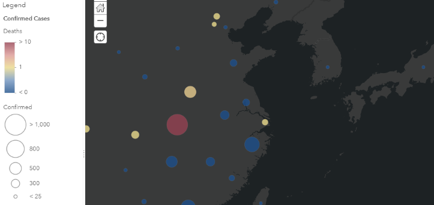
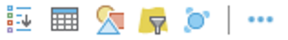

Lab Assignment 3
Change map symbols based on layer attribute values
Create a map in ArcGIS Online that uses layer styles to effectively communicate geographic information. Use different symbols, shapes, colors, or sizes to represent a dataset of your choice, and publish the map in a web app that gives the audience tools to explore the data.
For example, create a map of global disease cases using circle markers to represent a province/state/city, where larger circles indicate more cases at that location. Let the audience click each circle to get more information about that location.
The data layer used in this tutorial is hosted on ArcGIS Online, but you may find or create your own layer instead, as long as it has enough features with attributes to symbolize. The tutorial layer contains points representing provinces/states with confirmed cases of the 2019 novel coronavirus.
Data
The type of data layer you choose–point, line, or polygon–will determine what types of symbols and styles you can use to represent the data. Here are some typical styles used for the different layer types.
- Polygon: a shape with a solid fill color, a shape with a border but no fill color or semi-transparent fill
- Lines: a length represented with a dashed/dotted/solid style of various colors and widths
- Points: graphics or dots/circles of varying colors and sizes
The coronavirus cases layer has points for each province, state, or city where a case of the virus has been confirmed. These points can be represented in a few ways.
- Example 1: larger circles represent more disease cases
- Example 2: darker circles represent more disease cases
- Example 3, bivariate symbology: size represents total cases while color represents mortality

Web service URL for the layer used in this tutorial:
https://services1.arcgis.com/0MSEUqKaxRlEPj5g/arcgis/rest/services/ncov_cases/FeatureServer
Process
- Sign into ArcGIS Online and open the Map Viewer with a new map.
- Click
Add>Add Layer from Weband paste in the web service URL. ClickAdd Layer. The service consists of three layers and all should now appear in the Contents pane. - Mouseover the layer “ncov cases - Cases” and note the icons that appear under the layer name. Click
More OptionsandRenamethe layer to “Confirmed Cases”.

Layer icons from left to right:Show Legend,Show Table,Change Style,Filter,Cluster,More Options. These are available with an ArcGIS Online public account. - For the other two layers, click
More Options, andRemoveeach layer. - Your map should now have a single layer with a default style.
- Click
Show Tableand get familiar with the data. Click a column heading to sort the table. Note the min/max values for “Confirmed”, for example. - Click
Change Styleand a new pane appears with numbered steps (1 & 2).- Step 1. Choose an attribute to show - select “Confirmed” to style each feature’s symbol according to the feature’s number of confirmed cases of coronavirus, e.g., the point for Hubei Province will be larger because of its high number of cases.
- Step 2. Select a drawing style - select
Counts and Amounts (Size)and clickOptions.
- The first option,
Divided Bycan remainNonein this example but note that this could be used to create ratios, e.g., deaths to confirmed cases. -
Scroll down and unckeck the
Classify Databox if it is checked. Then, under theDivided Byoption, you should see a vertical bar with sliders to control the size of the circle symbols for different numbers of confirmed cases.

In this example, 11,177 is the maximum value in the “Confirmed” column and 1 is the minimum (a). All points with more than 1,000 cases will have the same circle size (only Hubei, currently), while all points with fewer than 10 cases will have the same circle size (b). Everything in between 10 and 1,000 will have a unique size based on the number of cases. The numbers 1,000 and 10 (break values) will therefore be the max and min labels on the map legend. The size values between 8 and 100 (c) mean that the smallest points (those with <10 cases) will appear 8 pixels across on screen, while the largest points (>1,000) will be 100 pixels across. - Click
OKthenDONEwhen finished with the style. - Click the
Savebutton and give your map a title, tags, and summary.
Try it
- In the
Change Stylepane:- Change the break values from Step 9 to see the effects on the map symbols.
- Click
SymbolsorLegendto change the color scheme. - Adjust the transparency, though you can go back to the default.
- Choose one option below:
- Check the box to
Classify Datato set up discrete classes with different symbols for each class, OR - Go back to Step 8 and choose a
Divide Byattribute to map a ratio, OR - Go back to Step 7 and under
Choose an attribute to showclickAdd attributeto set up bivariate symbols, for example symbolizing confirmed cases with size and recovered cases with color, OR - Choose a new attribute instead of “Confirmed” to map and set the break values, symbols, etc.
- Check the box to
- Change the basemap to something other than the default (Topographic). Pick one that you think fits well with your symbols.
- Enable popups on the layer to give basic information about each point location.
- Save and share the map as a web app using a template you think makes sense for the data and map.
- Go to your Content to see the new web app item and go to its Item Details page.
- Fill out basic details on the app’s Item Details page.
Think critically
What was the effect of changing the break values on the map symbols? How can that affect how the audience perceives the data? When you chose your symbols, colors, breaks, basemap, and any other aspects of the map and web app, were you trying to convey a particular message or highlight a particular aspect of the data? If another cartographer disagreed with your message, how might they change the map to communicate the same data differently?
- On the Item Details page of your web app, explain the cartographic decisions you made in the Try it section. The response doesn’t need to directly answer each of the questions posed aboved; it should generally reflect that some thought went into your map making and should describe your reasoning. Max: 100 words.
Submit
- The URL to the Item Details page of your web app. Example:
https://www.arcgis.com/home/item.html?id=ABC123